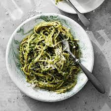

<h1>Pasta-Pesto</h1>

<h3>Description</h3>
<p>A simple but enjoyable dish works well with chicken.</p>

<h3>Ingredients</h3>
<ul>
    <li>Pasta (Spagetti)</li>
    <li>Pesto (Green)</li>
</ul>

<h3>Steps</h3>
<ol>
    <li>Boil the pasta</li>
    <li>Add the pesto</li>
    <li>Stir</li>
    <li>Decorate with cheese, greens or chicken</li>
    <li><em>Enjoy!</em></li>
</ol>